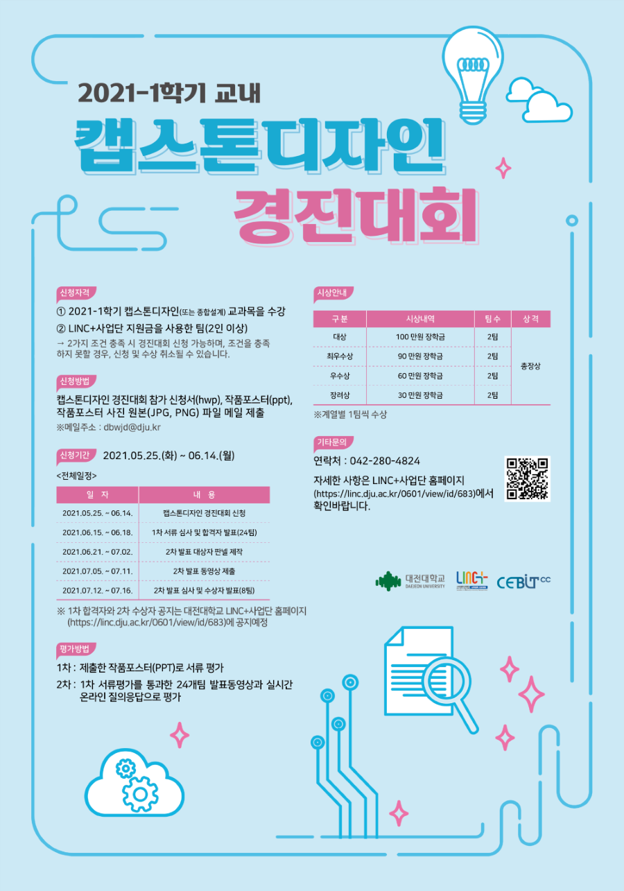

Home
ABOUT
CLASS
certificate
PROJECT
PLAN
인공지능 개발자, 김민준
--- 캡스톤 디자인 프로젝트 ---

2학년 2학기 부터 교내 외 캡스톤 프로젝트를 참가하면서 현장 실무와 프로그램에 대한 감을 익히면서 취업을 준비해야 한다.
데이콘 사이트
데이콘 사이트(https://dacon.io/)는 AI 데이터 분석 대회를 소게 해주는 사이트로 AI 관련 대회들도 소개를 해주고 참가자들의 소스가 공유되어 있어서 AI를 공부하면서 프로젝트를 준비하기 좋은 사이트이다.